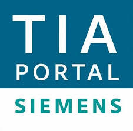
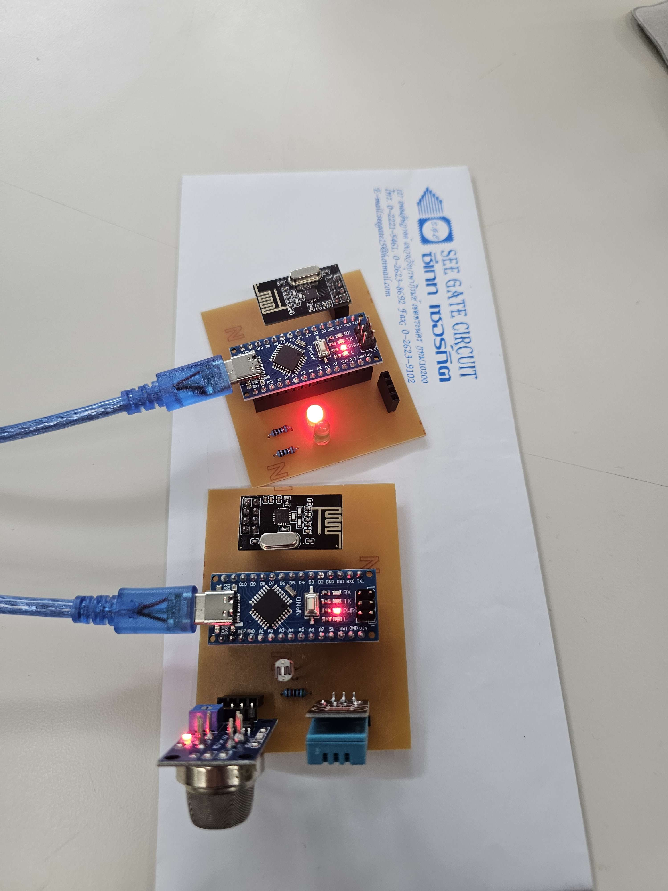
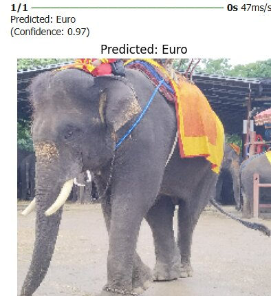
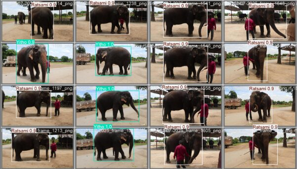
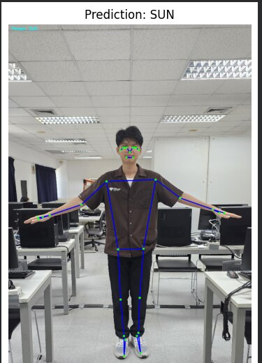

TIA Portal x Factory IO Projects
TIA Portal
LD
FBD
HMI Design
6 โปรเจคการเขียนโปรแกรม PLC ด้วยโปรแกรม TIA Portal โดยใช้ภาษา Ladder Diagram (LD) และ Function Block Diagram (FBD)

Wireless Room Safety Monitor
Arduino nano
PCB Design
IoT
ออกแบบแผ่นวงจร PCB สำหรับใช้ sensors ในการตรวจจับสถานะห้องและทำการส่งข้อมูลไปที่ Microcontroller อีกตัวเพื่อแสดงสถานะขึ้นคอมพิวเตอร์

Six Sigma Yellow Belt Project
Six Sigma
Project Charter
สร้าง Project Charter สำหรับโปรเจค Control box assembly improvement
(โปรเจคนี้เป็นส่วนหนึ่งของคอร์ส Six Sigma)

Elephants Identification (CNN)
CNN
Object Detection
Tensorflow
Programming
โปรแกรมสำหรับคัดแยกหน้าช้างด้วย CNN ผ่านการใช้ Object Detection เพื่อให้ง่ายต่อการคัดแยกเพิ่มมากขึ้น

Object Detection with YOLO
Python
OpenCV
Deep Learning
โปรเจกต์ AI ตรวจจับช้างและแยกตัวตนใช้โมเดล YOLOv11 แต่เนื่องจากใช้แค่เรื่อง Object Detection ความถูกต้องเลยอยู่ที่ 23.81%

Skeleton Extraction with mediapipe
Python
OpenCV
mediapipe
Deep Learning
โปรเจกต์ Skeleton Extraction ใช้ความกว้างของไหล่และมาตราส่วนในการระบุคน